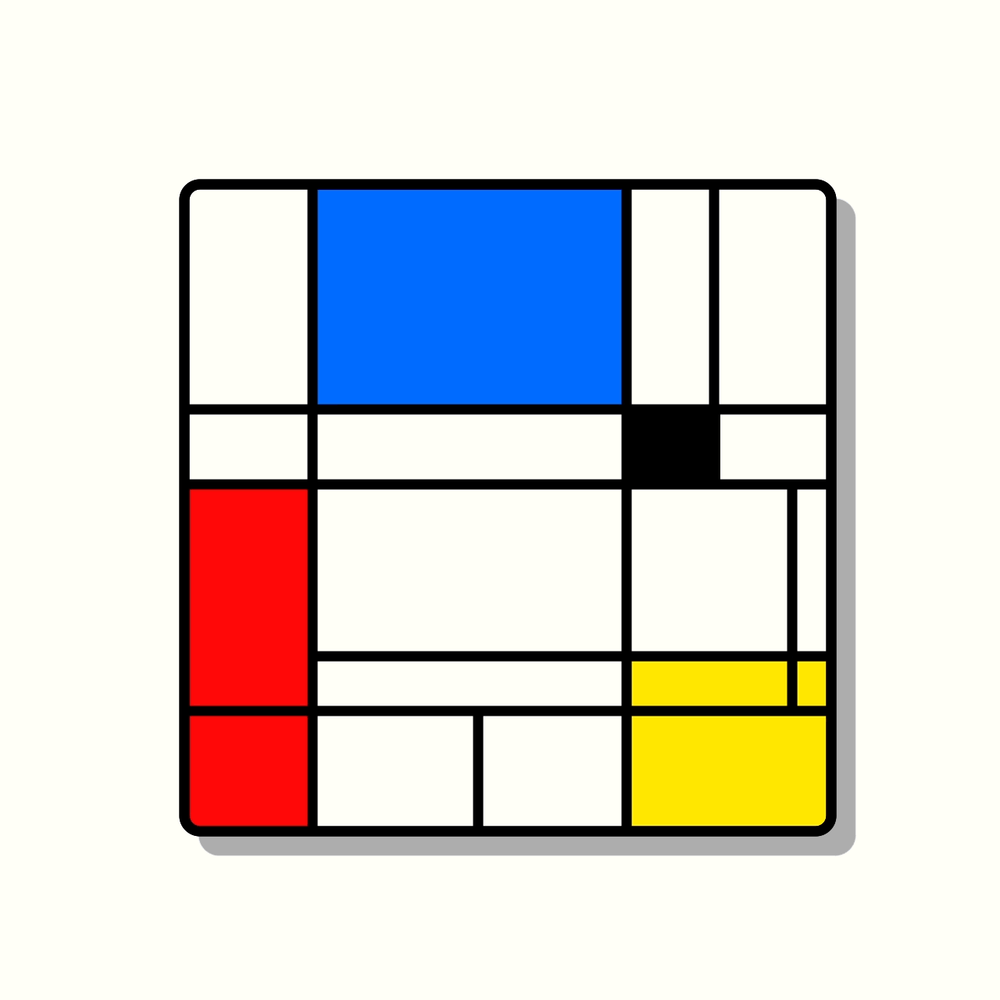

CSS ME, STUPID! ❤
10 cose che amo del CSS.
👋 Hello
Sono uno sviluppatore Web e sistemista dal 2001.
Co-organizzatore del Piacenza WordPress Meetup.
Dal 2014 docente, e responsabile sistemi IT della Scuola MOHOLE di Milano, Web & Digital Media.
CSS = Cascading Style Sheets
è un linguaggio che usiamo per definire la formattazione di documenti HTML, le pagine web.
IN THE BEGINNING
Il primo browser commerciale a supportare il CSS fu Internet Explorer 3 di Microsoft, agosto 1996.
PERCHÈ AMO IL CSS
Perchè all'inizio degli anni 2000 ero solo, con l'HTML.
Perchè arrivò Mozilla Firefox.
❤ E quindi mi innamorai del CSS ❤
❤ 10 cose che amo del CSS
1. BACKGROUND-SIZE COVER

background-size: cover;
Che bello essere in homepage a tutto schermo!
BACKGROUND-SIZE COVER
.cover.bassotti{
background: url(bassotto.jpg) center center no-repeat;
background-size: cover;
}
2. IMG RESPONSIVE
Con l'introduzione degli smartphone avevo bisogno di poter adattare le immagini agli schermi.
Con il CSS bastano due righe.
IMG RESPONSIVE
img{
max-width: 100%;
height: auto;
}

3. MEDIA QUERY
MEDIA QUERY
Non solo smartphone:
anche tablet, smart-tv e smart-watch.
Fummo
salvati dalle media query
MEDIA QUERY
@media (max-width: 500px;) and (orientation: portrait) {
.mquery{
font-size: 1rem:
width: 100%;
}
}
4. FLEXBOX Space Around
FLEXBOX Space Around
div{
display: flex;
justify-content: space-around;
}


5. FLEXBOX CENTER
FLEXBOX CENTER
div{
display: flex;
justify-content: center;
align-items: center;
}
6. Emmet
con Emmet per scrivere codice basta un TAC...

7. Grid
Amo il display:grid perchè mi permette finalmente di mettere i bassotti dove voglio...
div{
display: grid;
grid-template-columns: repeat(8, 1fr);
grid-template-rows: repeat(6, 5vw);
grid-gap: 1.5rem;
}
Grid

8. Sass

Con il pre-processing di Sass creo CSS come in un linguaggio di programmazione
/* VARIABILI */
$coloreRosso: rgba(195, 8, 65, 0.5);
$coloreGiallo: rgba(222, 239, 11, 0.5);
div.o1{ background-color: $coloreRosso; }
div.o2{ background-color: $coloreGiallo; }
Sass
9. VARIABLE FONTS
VARIABLE FONTS
See the Pen CSS is Awesome - Variable fonts Edition. by Mandy Michael by FFrancesco (@FFLAB) on CodePen.
VARIABLE FONTS
Giulia Laco al WordCamp Milano 2019!
10. LIGHT LEVEL
LIGHT LEVEL
See the Pen Piccalilli Issue #10 — User controlled dark mode by FFrancesco (@FFLAB) on CodePen.
+++ ! THE FUTURE... bonus track! +++
11. HOUDINI

HOUDINI
I trucchi di Houdini: la magia nel futuro del CSS - Massimo Artizzu - cssday 2019 from GrUSP on Vimeo.
cssmestupid.netlify.com
Slides realizzate con Reveal.js (Html, CSS e JavaScript)
Le trovate online qui: cssmestupid.netlify.com
Sito WordPress demo: fflab.info/cssme
The End
Grazie a tutti!
❤